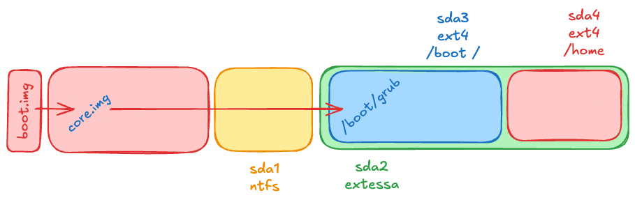

Arrencada del sistema (Part 2)
Unitat 2 · Administració i Manteniment de Sistemes i Aplicacions (AMSA)
Etapes de l’arrancada

Què és el GRUB/GRUB2?
GRUB (GRand Unified Bootloader) és un gestor d’arrencada molt utilitzat en sistemes operatius Linux i altres sistemes Unix-like. La seva funció principal és carregar un kernel del sistema operatiu a la memòria i iniciar el procés d’arrencada.
- Funcions principals:
- Permet seleccionar entre múltiples sistemes operatius instal·lats en un mateix ordinador (multi-boot).
- Proporciona una interfície per configurar opcions d’arrencada, com ara paràmetres del kernel.
- Suporta diferents sistemes de fitxers, permetent accedir a particions amb formats com ext4, Btrfs, XFS, entre altres.
- Ofereix una consola interactiva per a la resolució de problemes i la configuració avançada.
Etapes d’execució del GRUB
- Stage 1:
- En sistemes BIOS: efectivament és el codi al MBR (o VBR) → molt petit (≤ 446 bytes).
- En sistemes UEFI: és un fitxer executable EFI (normalment a /boot/efi/EFI/grub/grubx64.efi).
- Stage 1.5 (només en BIOS, opcional):
- Proporciona suport bàsic per a sistemes de fitxers.
- Normalment es troba en sectors buits després del MBR (espai entre MBR i primera partició). core.img.
- Stage 2:
- Conté el GRUB complet amb el menú d’arrencada.
- Pot carregar mòduls addicionals (drivers de FS, vídeo, xarxa, criptografia…).
- Transfereix el control al kernel per iniciar el sistema operatiu.
Diagrama d’arrencada del GRUB

- set root=‘hd0,msdos1’: Indica la partició arrel on es troba el sistema operatiu que es vol arrencar.
- linux /vmlinuz root=/dev/sda1: Indica la ruta del kernel i la partició arrel.
- initrd /initramfs.img: Indica la ruta de l’initramfs.
- boot: Inicia el sistema operatiu.
Configuració del GRUB (I)
El fitxer principal de configuració de GRUB2 és:
- /boot/grub/grub.cfg (o /boot/grub2/grub.cfg en algunes distribucions).
Important
No s’ha d’editar directament, ja que es regenera automàticament.
Fitxers i directoris
/etc/default/grub: Opcions generals de configuració i variables d’entorn./etc/grub.d/
Directori amb scripts que generengrub.cfg:00_header→ configuració inicial
10_linux→ detecta kernels Linux
30_os-prober→ detecta altres SO
40_custom→ entrades personalitzades
Configuració del GRUB (II)
Un cop modificats els fitxers anteriors, cal regenerar grub.cfg:
Variables /etc/default/grub
| Variable | Descripció |
|---|---|
GRUB_BACKGROUND |
Imatge de fons que es mostrarà al menú d’arrencada. |
GRUB_TIMEOUT |
Temps en segons abans de carregar l’entrada predeterminada. |
GRUB_DEFAULT |
Entrada per defecte que es carregarà (index o nom) |
GRUB_CMDLINE_LINUX |
Opcions de línia de comandes que es passen al nucli en arrencar el sistema. |
GRUB_DISABLE_RECOVERY |
Si true, desactiva les opcions de mode de recuperació. |
GRUB_DISABLE_OS_PROBER |
Si true, impedeix que GRUB busqui altres sistemes operatius instal·lats. |
GRUB_PRELOAD_MODULES |
Llista de mòduls GRUB que es carregaran abans de mostrar el menú d’arrencada. |
Paràmetres del kernel més comuns
| Paràmetre | Descripció |
|---|---|
quiet |
Suprimeix els missatges del nucli durant l’arrencada. |
single |
Inicia el sistema en mode d’usuari únic (single-user mode) per a tasques de manteniment. |
nomodeset |
Desactiva la detecció de modes de vídeo, útil per a solucions de problemes amb gràfics. |
root= |
Especifica la partició arrel del sistema de fitxers. |
init= |
Especifica un fitxer d’init alternatiu. |
ro |
Muntatge de la partició arrel en mode de només lectura durant l’arrencada. |
rw |
Muntatge de la partició arrel en mode de lectura i escriptura durant l’arrencada. |
systemd.unit = |
Especifica el target de systemd a iniciar (ex: multi-user.target, graphical.target). |
Consideracions addicionals
- En UEFI, GRUB2 és un fitxer EFI a /boot/efi/EFI/
/grubx64.efi. - Es poden protegir entrades amb contrasenya a /etc/grub.d/40_custom.
- Al menú, amb
ees poden passar paràmetres temporals al kernel. - GRUB permet chainloading per arrencar altres SO (Windows, BSD).
- Amb UEFI Secure Boot, GRUB pot ser signat digitalment.
Secure Boot
Secure Boot és una característica de seguretat del firmware UEFI que assegura que només es carregui i s’executi programari de confiança durant el procés d’arrencada del sistema.
- UEFI comprova la signatura digital del bootloader EFI (per exemple, grubx64.efi) abans de carregar-lo.
- La signatura és comparada amb les claus de confiança emmagatzemades en la DB (Database of allowed signatures) del firmware.
- Si la signatura és vàlida, UEFI carrega i executa el bootloader. Sinó, impedeix l’execució del bootloader i mostra un missatge d’error.
- Pot carregar mòduls addicionals signats, que també poden ser verificats pel mateix GRUB (opcional).
- El kernel Linux també pot estar signat (opcional, si s’utilitza Linux Kernel Signing).
- Si s’utilitza Shim, aquest actua com a intermediari: el firmware UEFI confia en Shim, i Shim verifica després GRUB i el kernel.
Problemes de Secure Boot
- Compatibilitat: No tots els sistemes operatius o distribucions Linux suporten Secure Boot de manera nativa.
- Claus de confiança: La gestió de claus pot ser complexa, especialment en entorns corporatius.
- Actualitzacions: Les actualitzacions del bootloader o del kernel poden requerir la re-signatura dels components.
- Restriccions: Algunes funcionalitats avançades poden estar limitades per les polítiques de Secure Boot.
Malgrat Secure Boot, s’han detectat vulnerabilitats que permeten carregar bootloaders no autoritzats en alguns dispositius (ArsTechnica, 2024).
Inici del sistema operatiu
Què és el kernel?
El kernel és el nucli del sistema operatiu, responsable de gestionar els recursos del sistema, com la memòria, el processador, els dispositius d’entrada/sortida, la xarxa i els processos d’usuari.

El kernel es carrega a la memòria RAM durant el procés d’arrencada i es troba normalment a la partició arrel del sistema de fitxers (generalment en /boot).
El kernel és un programa binari que es compila específicament per a l’arquitectura de maquinari del sistema (per exemple, x86, ARM, etc.)
Pot ser personalitzat amb diferents mòduls i controladors segons les necessitats del sistema.
Carregar el kernel
Per carregar el kernel, el bootloader necessita:
- Ruta del kernel
- Normalment un fitxer com vmlinuz-version dins de
/boot.
- Normalment un fitxer com vmlinuz-version dins de
- Partició arrel
- La partició on es troba el sistema de fitxers del sistema operatiu.
- Fitxer de configuració del bootloader
- Com grub.cfg en el cas de GRUB, que indica ruta del kernel, paràmetres i initramfs.
- Càrrega de l’initramfs
- Initramfs (initial RAM filesystem) és un sistema de fitxers temporal a RAM.
- Permet inicialitzar controladors bàsics i muntar la partició arrel real abans de transferir el control al kernel complet.
- Initramfs (initial RAM filesystem) és un sistema de fitxers temporal a RAM.
Initramfs o initrd
Què és l’Initramfs?
L’Initramfs (Initial RAM Filesystem) és un petit sistema de fitxers integrat dins la imatge del nucli Linux.
- Permet que el kernel pugui muntar la partició arrel durant l’arrencada.
- A diferència de l’antic initrd, que residia en un disc, l’initramfs es carrega completament a RAM com a imatge comprimida.
Objectius
- Proporcionar un sistema de fitxers temporal i mínim.
- Carregar mòduls essencials del kernel necessaris per accedir a maquinari i sistemes de fitxers.
- Executar scripts d’inicialització abans de transferir el control al sistema complet.
Etapes de l’Initramfs (I)
- Descompressió a la RAM
- El fitxer CPIO de l’initramfs es descomprimeix a un sistema de fitxers temporal a RAM (
tmpfs), creant l’entorn mínim necessari per iniciar el kernel.
- El fitxer CPIO de l’initramfs es descomprimeix a un sistema de fitxers temporal a RAM (
- Execució de l’script
/init/inités l’entrypoint principal de l’initramfs.
- Executa la seqüència d’inicialització: muntatge de sistemes virtuals, càrrega de mòduls i preparació de l’entorn.
- Creació del sistema de fitxers temporal
- Muntatge de
/proc,/sysi/dev.
- Creació de directoris temporals (
/tmp,/run) per permetre que els scripts i utilitats funcionin.
- Muntatge de
Etapes de l’Initramfs (II)
- Carregar mòduls del kernel
- Carrega controladors necessaris per accedir a maquinari (discos, controladors de xarxa, LVM, RAID, xifrat).
- Si els mòduls estan integrats al kernel, aquesta etapa pot ser mínima o nul·la.
- Carrega controladors necessaris per accedir a maquinari (discos, controladors de xarxa, LVM, RAID, xifrat).
- Muntatge de la partició arrel real
- Localitza la partició arrel (per exemple
/dev/sda1oUUID=...).
- Muntatge en un punt temporal (
/mnt/rooto similar).
- Localitza la partició arrel (per exemple
- Transició al sistema complet (
switch_root)- Substitueix l’entorn temporal de l’initramfs pel sistema de fitxers real.
- Executa el binari
initdel sistema complet (normalment/sbin/inito systemd).
- Substitueix l’entorn temporal de l’initramfs pel sistema de fitxers real.
Etapes de l’Initramfs (III)
- Alliberament de l’initramfs
- Destruir l’entorn temporal a RAM.
- Alliberar la memòria utilitzada pel sistema de fitxers temporal, deixant el control complet al sistema operatiu.
- Destruir l’entorn temporal a RAM.
Característiques de l’Initramfs
- Facilita la portabilitat i modularitat del kernel, permetent arrencar diferents configuracions de maquinari sense necessitat de recompilar el kernel cada cop.
- No sempre està present, pot estar buit o omès si el sistema no necessita un espai RAM inicial (per exemple, en sistemes simples o compilacions estàtiques del nucli).
- Es configura durant la compilació del nucli
make menuconfigi es pot definir el contingut de l’initramfs amb un fitxer de configuració, s’utiltizen variables:- CONFIG_BLK_DEV_INITRD: Activa la creació de l’initramfs.
- CONFIG_INITRAMFS_SOURCE: Especifica el fitxer CPIO, un directori o un fitxer d’especificació.
- També es pot personalitzar segons les necessitats del sistema, permetent afegir mòduls del kernel, scripts personalitzats o utilitats addicionals.
Contingut de l’initramfs
- Fitxers executables
- Ex: BusyBox, que encapsula moltes utilitats Unix (
ls,cp,mount, shell, etc.).
- Poden incloure altres programes compilats estàticament.
- Ex: BusyBox, que encapsula moltes utilitats Unix (
- Mòduls del kernel
- Controladors per discos, xarxes, sistemes RAID o LVM.
- Són carregats si no estan integrats dins del nucli.
- Controladors per discos, xarxes, sistemes RAID o LVM.
- Fitxers de dispositiu i sistemes especials
/devconté dispositius comttyonull.
- Gestionats per utilitats com mdev o udev.
Tots aquests elements es troben comprimits en un fitxer CPIO, descomprimits a RAM durant l’arrencada i executats per l’script /init.
Configuració de l’initramfs
L’initramfs es pot personalitzar segons les necessitats del sistema, permetent afegir mòduls del kernel, scripts personalitzats o utilitats addicionals. La configuració depèn de la distribució:
Debian/Ubuntu
Fedora/Red Hat
initramfs-tools (Debian) (I)
/etc/initramfs-tools/modules
Llista de mòduls addicionals del kernel a incloure a l’initramfs, per exemple controladors de xarxa o discos RAID.
/etc/initramfs-tools/hooks/
Scripts que s’executen durant la creació de l’initramfs, útils per afegir fitxers o directoris personalitzats.
/etc/initramfs-tools/conf.d/
Fitxers de configuració addicionals per modificar paràmetres específics de l’initramfs.
/etc/initramfs-tools/initramfs.conf
Configuració principal, inclou opcions com compressió, ús de scripts, paràmetres de muntatge.
/usr/share/initramfs-tools/
Scripts i fitxers estàndard utilitzats per initramfs-tools, no modificats normalment.
initramfs-tools (Debian) (II)
/etc/initramfs-tools/scripts/
Scripts que s’executen durant l’arrencada:init-top/→ scripts executats just després de descomprimir l’initramfs i abans de muntar/proc,/sysi/dev. Ideal per inicialitzar serveis crítics o preparar dispositius especials.
init-bottom/→ scripts executats just abans de ferswitch_rootal sistema complet. Útil per passos finals com muntar la partició arrel, desbloquejar LUKS o activar LVM.
local-bottom/→ scripts addicionals definits per l’administrador.local-top/→ scripts addicionals definits per l’administrador.
initramfs-tools (Debian) (II)
premount/→ scripts executats abans de muntar la partició arrel. Ideal per preparar dispositius o sistemes de fitxers especials.mount/→ scripts executats durant el muntatge de la partició arrel. Útil per passos específics relacionats amb el muntatge.cleanup/→ scripts executats després de ferswitch_rootal sistema complet. Ideal per netejar recursos temporals o realitzar tasques posteriors a l’arrencada.
dracut (Fedora/Red Hat)
/etc/dracut.conf
Fitxer de configuració principal de Dracut, on es poden definir opcions generals: compressió, tipus de fitxer d’initramfs, paràmetres del kernel, etc.
/etc/dracut.conf.d/
Fitxers de configuració addicionals, útils per a configuracions específiques de mòduls o projectes.
/usr/lib/dracut/modules.d/
Conté mòduls estàndard de Dracut (ex: mòduls de xarxa, lvm, cryptsetup), carregats automàticament segons la configuració.
/etc/dracut/modules.d/
Mòduls personalitzats creats per l’administrador, per afegir scripts o fitxers específics.
/usr/share/dracut/
Conté scripts i fitxers estàndard utilitzats durant la generació de l’initramfs, igual que a initramfs-tools.
Quan regenerar l’initramfs?
- Actualització del nucli: Quan es compila o instal·la un nou kernel, l’initramfs associat ha de ser regenerat per garantir que carrega correctament els mòduls i el maquinari necessari.
- Configuració RAID: Si es modifiquen o s’afegeixen sistemes RAID, l’initramfs ha de reflectir aquests canvis per assegurar un arrencada correcta.
- Xifrat de discos: Per a sistemes amb particions xifrades (LUKS), cal actualitzar l’initramfs després de canvis en la configuració de xifrat per poder accedir a les particions durant l’arrencada.
- Configuració de xarxa: Si es canvien components de xarxa que s’utilitzen en el procés d’arrencada (sistemes amb arrencada PXE).
Cas d’us: USB amb clau de desxifrat
Un cas d’ús comú de l’initramfs és en sistemes amb particions xifrades amb LUKS que utilitzen una clau emmagatzemada en un dispositiu USB per desxifrar la partició arrel durant l’arrencada.
- Munti els sistemes virtuals necessaris (
/proc,/sys).
- Munti la unitat USB que conté la clau.
- Llegeixi la clau i desxifri la partició LUKS.
- Activar volums LVM si cal.
- Muntar la partició arrel i transferir el control amb
switch_root.
#!/bin/busybox sh
mount -t proc proc /proc
mount -t sysfs sys /sys
mount /dev/sdb1 /mnt
KEYFILE=/mnt/keyfile
cryptsetup luksOpen /dev/sda1 crypted --key-file $KEYFILE
echo "Retira el dispositiu USB i prem Enter per continuar."
read
vgchange -a y
mount /dev/mapper/vg-root /mnt
exec switch_root /mnt /sbin/initExercicis Propostas
- Modificant la contrasenya de l’usuari root a través del GRUB
- Desxifrat automàtic mitjançant clau en disc secundari (USB emulat)
- Discussió: Secure Boot és realment segur?: Cerca notícies recents sobre Secure Boot i comparteix-les al fòrum del curs. Debatiu sobre avantatges, desavantatges, vulnerabilitats conegudes i experiències personals.
That’s all
Take Home Message
El procés d’arrencada és un procés complex. Els administradors de sistemes han de conèixer aquest procés per poder gestionar i solucionar problemes durant l’arrencada del sistema i garantir un sistema segur, estable i eficient.


Unitat 2 · Administració i Manteniment de Sistemes i Aplicacions (AMSA) 🏠